19/01/2026 — Đau ngực cấp ở một người đàn ông ngoài 50 tuổi: hết, tái phát, lại hết: Điện tâm đồ tại khoa cấp cứu có phải là “tái cực sớm”?
Bản dịch tiếng Việt của bài "Acute chest pain in a 50-something: resolves, recurs, resolves: Does the ED ECG show “Early Repol”?" – Dr. Smith’s ECG Blog. Giữ nguyên toàn bộ 11 hình ảnh của bản gốc.

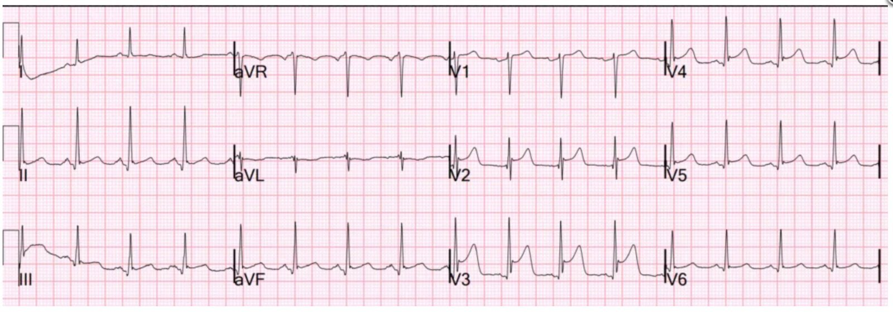
Thành phố Minneapolis của tôi hiện đang bị ICE tấn công và chiếm đóng, điều đó rất đáng sợ và gây lo âu, đặc biệt với bất kỳ ai có làn da nâu. Họ liên tục vi phạm pháp luật. Bản thân tôi đã tận mắt chứng kiến những vi phạm giao thông nghiêm trọng và nguy hiểm: 1) lái xe 80 dặm/giờ trên đường 35W, 2) một đoàn 12 xe chạy thẳng qua đèn đỏ, 3) một chiếc SUV vượt với tốc độ 60 dặm/giờ trên làn ngược chiều của một con phố trong thành phố, 4) một chiếc SUV vượt đèn đỏ rồi rẽ trái cắt ngang 8 làn xe. 5) một đoàn xe chạy trên con phố chỉ dành cho xe buýt. Đó mới chỉ là những vụ việc mà bản thân tôi tận mắt chứng kiến. Ước gì tôi đã có camera hành trình, nhưng mãi sau này tôi mới nghĩ tới.
Ca bệnh
Một người đàn ông ngoài 50 tuổi gọi 911 vì đau ngực cấp. Ông có tiền sử rất đáng kể về nhồi máu cơ tim và bệnh mạch vành với nhiều stent (ở D1 và RCA), và tiền sử bệnh cơ tim thiếu máu cục bộ
Nhân viên cấp cứu ngoài viện đến và ghi các điện tâm đồ sau:
Điện tâm đồ 1, thời điểm 0:

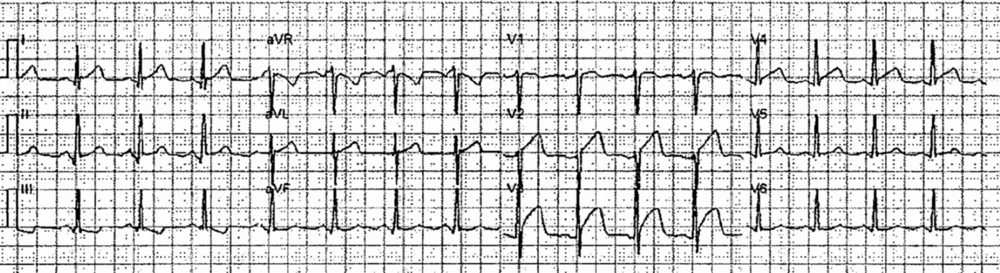
Bạn nghĩ gì?
Điện tâm đồ này chẩn đoán tắc LAD (OMI do tắc LAD).
Queen of Hearts nhận ra điều đó:

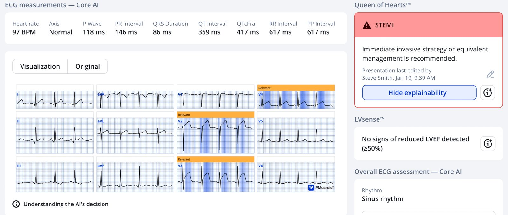
Ứng dụng PMcardio for Individuals 3.0 mới nay đã có mô hình Queen of Hearts mới nhất và khả năng giải thích của AI (bản đồ nhiệt màu xanh lam)! Tải ngay cho iOS hoặc Android. https://www.powerfulmedical.com/pmcardio-individuals/ (Bác sĩ Smith và Meyers đã huấn luyện mô hình AI và là cổ đông của Powerful Medical). Là thành viên trong cộng đồng của chúng tôi, bạn có thể dùng mã DRSMITH20 để được giảm 20% độc quyền cho năm đầu tiên của gói thuê bao hằng năm. Tuyên bố miễn trừ: Một số mô-đun AI ECG là thiết bị y tế mang dấu CE theo EU MDR và chỉ được chứng nhận lưu hành tại Liên minh châu Âu và Vương quốc Anh. Công nghệ PMcardio chưa được Cục Quản lý Thực phẩm và Dược phẩm Hoa Kỳ (FDA) cấp phép sử dụng lâm sàng tại Hoa Kỳ.
Cơn đau bắt đầu giảm, và các điện tâm đồ liên tiếp được ghi lại:
Điện tâm đồ 2, thời điểm 2 phút:

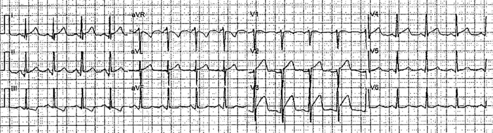
Điện tâm đồ 3, thời điểm 16 phút

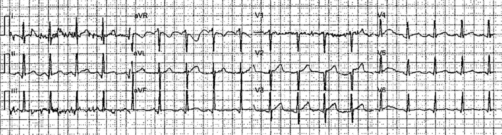
Điện tâm đồ 4, thời điểm 32 phút:

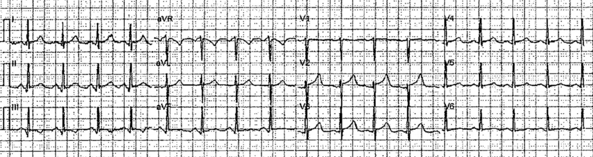
Giờ thì nó đã bình thường hóa!
Lúc này bệnh nhân đã hết đau, và các điện tâm đồ lần lượt cho thấy tái tưới máu hoàn toàn trước khi đến viện.
Sau đó bệnh nhân đến khoa cấp cứu (ED) và bị đau ngực tái phát. Điện tâm đồ này được ghi lúc t = 58 phút. Vậy đây là điện tâm đồ 5, ghi tại khoa cấp cứu.
Đây là “Điện tâm đồ cuối cùng” được nhắc đến trong TIÊU ĐỀ của bài.

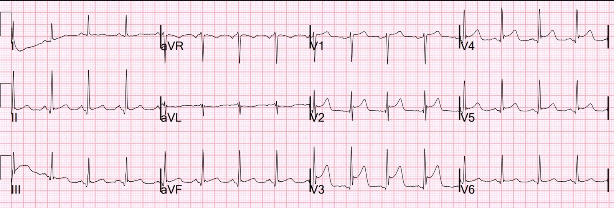
Bây giờ bạn thấy gì?
Có ST chênh lên tái phát. Cũng có mất sóng S vốn có trước đó ở V2-V5. Việc không có sóng S ở V2-3 không bao giờ gặp trong biến thể bình thường, trừ một ngoại lệ: đôi khi (10%) sóng S ở V3 có thể không có NẾU CÓ SÓNG J. Không có cả sóng S lẫn sóng J ở V2-3 là điều tôi gọi là “biến dạng phần cuối QRS” (Terminal QRS Distortion), và tôi đã chứng minh rằng nó không bao giờ có trong tái cực sớm (ST chênh lên biến thể bình thường ở V2-V4).
Trong ca này, thực ra có khía ở điểm J tại V3!! Tuy nhiên, sóng S đã biến mất so với cả điện tâm đồ liên tiếp ngay trước đó lẫn điện tâm đồ cũ (trình bày bên dưới). Vì vậy, dù có khía này, vẫn có biến dạng phần cuối QRS (TQRSD).
Hơn nữa, tôi không bao giờ kết luận “ST chênh lên biến thể bình thường” hay “tái cực sớm” khi ST chênh lên tới 5 mm. Như vậy là quá nhiều. Tất cả những điều này được trình bày trong bài báo năm 2012 này. ECG Differentiation of LAD OMI from Early Repol.
Nghiên cứu thẩm định ngoài ở đây. A Tale of Two Formulas
Và bằng chứng về ý nghĩa của biến dạng phần cuối QRS ở đây. Terminal QRS Distortion may be Present in LAD OMI but is absent in Early Repol
Và một minh họa tuyệt vời về TQRSD ở đây: Best Explanation of Terminal QRS Distortion in Diagnosis of Electrocardiographically Subtle LAD Occlusion
Ca bệnh tiếp diễn
Để chứng minh điều này, hãy xem một điện tâm đồ của bệnh nhân này ghi 2 tháng trước đó:

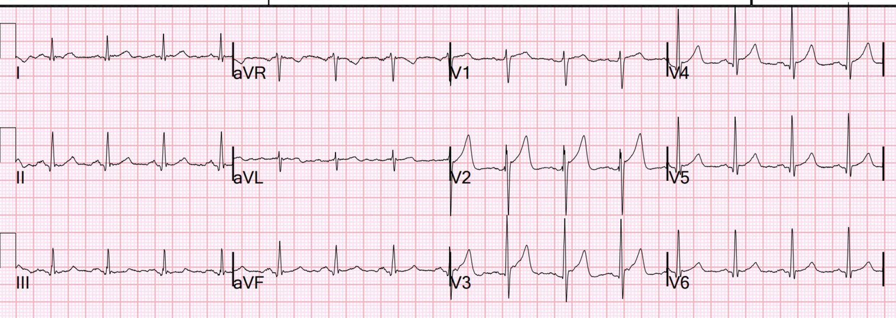
Điều này xác nhận rằng bình thường bệnh nhân có sóng S ở V2-3, như mọi trường hợp tái cực sớm.
Bác sĩ can thiệp cho rằng điện tâm đồ tại khoa cấp cứu (điện tâm đồ 5) là “tái cực sớm”. Điều này rõ ràng là không đúng. Điện tâm đồ đã bình thường hóa trước khi đến viện, nhưng sau đó động mạch đã tắc lại.
Sau đó bệnh nhân lại hết đau.
Chụp mạch vành cho thấy tổn thương thủ phạm hẹp 95% ở LAD, kèm bệnh 3 nhánh mạch vành. Bệnh nhân được lên kế hoạch phẫu thuật bắc cầu chủ vành (CABG). Không can thiệp PCI.
Troponin I đỉnh là 328 ng/L.
Điện tâm đồ sau khi cơn đau thắt ngực đã dịu:

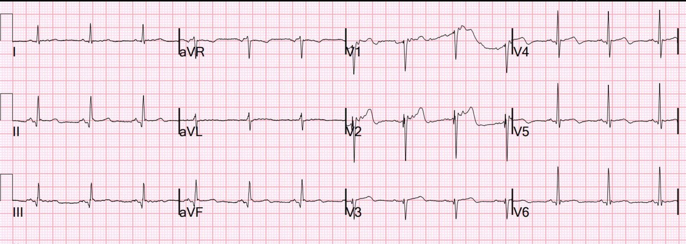
Điều này xác nhận tái tưới máu tự phát với sự tái lập sóng S và sóng T tái tưới máu Wellens điển hình.
Siêu âm tim:
Kích thước buồng thất trái bình thường, thành tim dày nhẹ, và phân suất tống máu giảm nhẹ 40 – 45%. Rối loạn vận động thành khu trú ở thành dưới và dưới-bên (do nhồi máu cơ tim cũ). Lưu ý rằng không có rối loạn vận động thành (WMA) ở thành trước. Tái tưới máu nhanh thường dẫn đến hoàn toàn không có WMA; đôi khi gây WMA tạm thời (“choáng cơ tim” – stunning) và hết dần theo thời gian. Vì vậy, nếu bạn nghĩ có thể chẩn đoán ACS với độ nhạy cao bằng cách làm siêu âm tim vào ngày hôm sau, hãy nghĩ lại.
Hãy xem Queen of Hearts lẽ ra đã thể hiện thế nào:

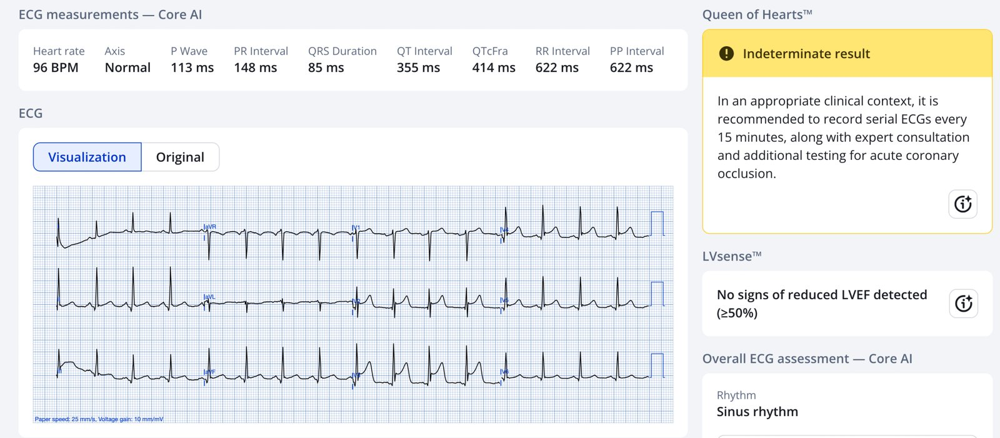
Đáng tiếc, Queen of Hearts không nhận ra, dù cô ấy có lo ngại về điều đó (kết quả Không xác định với giá trị số là 0,4 — dương tính là từ 0,5 trở lên):
Điểm cần học:
Hãy học cách nhận biết biến dạng phần cuối QRS (Terminal QRS Distortion, TQRSD). Đây là một ca TQRSD tồi tệ:
An intoxicated, agitated, 29 year old with chest pain (Một người 29 tuổi say, kích động, bị đau ngực)
= = =
======================================
BÌNH LUẬN CỦA TÔI, bởi KEN GRAUER, MD (19/1/2026):
Tôi rất thích cách ca hôm nay cung cấp 5 điện tâm đồ liên tiếp được ghi trong vòng 1 giờ đầu tiên sau khi bệnh nhân mới bị CP (đau ngực – Chest Pain) này được thăm khám.
- Tôi tập trung Bình luận của tôi vào 3 điện tâm đồ liên tiếp đầu tiên, được ghi trong vòng 16 phút đầu.
- Thú nhận: Tôi đã xem 2 bản ghi đầu tiên — nhưng không thấy gì khi xem riêng rẽ điện tâm đồ #1 và điện tâm đồ #2. Tiếp theo tôi xem riêng điện tâm đồ #3, và tôi nghĩ nó trông như có “phần nào cải thiện” — nhưng tôi gặp khó khăn khi chỉ ra cụ thể điều gì tốt hơn khi xem riêng bản ghi đó.
= = =
Hãy TỰ thử!
- Xem điện tâm đồ #1. Sau đó để điện tâm đồ #1 sang một bên.
- Bây giờ xem riêng điện tâm đồ #2. Nó trông tốt hơn hay xấu hơn điện tâm đồ #1?
- Bây giờ để điện tâm đồ #1 và 2 sang một bên — và chỉ xem điện tâm đồ #3. Thay đổi nhiều đến mức nào?
- Bây giờ xem cả 3 bản ghi cùng nhau trong Hình 1. So sánh từng bản ghi với các bản ghi còn lại, xem theo từng chuyển đạo để xác minh các khác biệt.
= = =
Hình 1: 3 điện tâm đồ đầu tiên trong ca hôm nay. (Để dễ quan sát hơn — tôi đã số hóa các điện tâm đồ gốc bằng PMcardio).

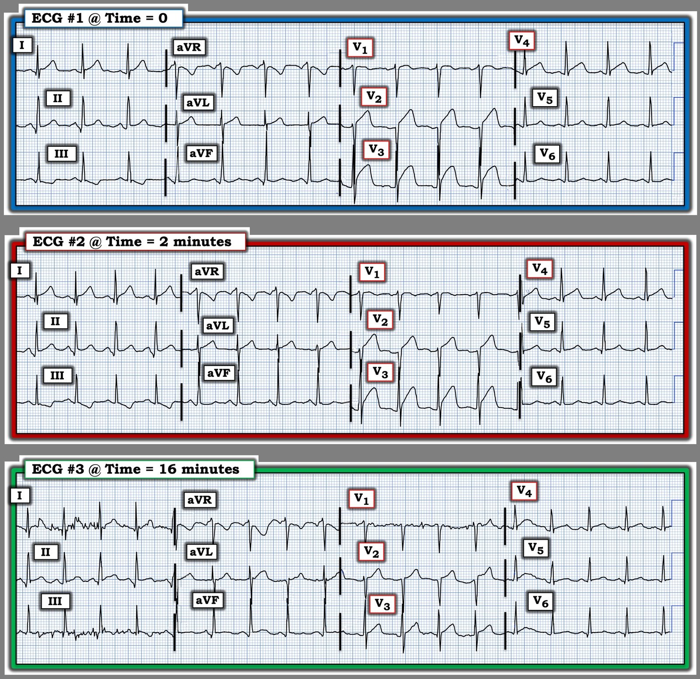
= = =
So sánh theo từng chuyển đạo:
Tôi cho rằng những khác biệt MẤU CHỐT khi so sánh giữa các chuyển đạo nằm ở các chuyển đạo từ V1 đến V4.
- Điện tâm đồ #1 — là bản ghi đáng lo ngại nhất! Có ST dạng vòm (coving) với ST chênh lên kín đáo ở chuyển đạo V1 — ST thẳng đuỗn với ST chênh lên ít nhất 1,5 mm ở chuyển đạo V2 — đoạn ST chênh lên dạng vòm (nếu không muốn nói là phồng lên!) ở chuyển đạo V3 — kèm ST thẳng đuỗn và vẫn còn ST chênh lên 1 mm ở chuyển đạo V4.
- Điện tâm đồ #2 — ghi chỉ 2 phút sau điện tâm đồ #1, đã cho thấy cải thiện. Đoạn ST dạng vòm ở chuyển đạo V1 kém nổi bật hơn so với 2 phút trước — nay ST thẳng đuỗn ít hơn và ST chênh lên ít hơn ở chuyển đạo V2 — rõ ràng đoạn ST “phồng lên” ít hơn và điểm J chênh lên ít hơn ở chuyển đạo V3 — và mức ST thẳng đuỗn ở chuyển đạo V4 giảm kín đáo so với những gì thấy ở điện tâm đồ #1.
- Điện tâm đồ #3 — có nhiều nhiễu hơn, nhưng thay đổi của các bất thường sóng ST-T so với điện tâm đồ #2 ghi 14 phút trước đó là rất đáng kể. Đoạn ST ở chuyển đạo V1 nay đã dẹt — và mức ST chênh lên ít hơn, nay đoạn ST lõm hướng lên (concave-up) rõ hơn ở các chuyển đạo V2,V3,V4 so với điện tâm đồ #2.
= = =
Điểm cần học:
Việc nhận ra những thay đổi sóng ST-T đôi khi tinh tế nêu trên, quan sát được trong 3 bản ghi liên tiếp này, lẽ ra không cần thiết để xác lập chẩn đoán OMI cấp đang diễn tiến cần thông tim kịp thời với PCI trong ca hôm nay (vì điều này lẽ ra đã phải rõ ràng từ điện tâm đồ ban đầu và bệnh sử CP mới xuất hiện ở bệnh nhân nguy cơ cao này).
- Dù vậy — có nhiều trường hợp khi đánh giá bệnh nhân mới bị CP, việc phát hiện thay đổi sóng ST-T “động” (dynamic) có thể là dấu hiệu điện tâm đồ then chốt để thuyết phục một bác sĩ can thiệp còn do dự về nhu cầu thông tim kịp thời và PCI.
- Trừ khi bạn so sánh các bản ghi liên tiếp theo từng chuyển đạo, với mỗi bản ghi được đặt ngay cạnh bản ghi mà bạn đang so sánh — những thay đổi sóng ST-T tinh tế nhưng quan trọng sẽ bị bỏ sót!
= = =
PHẦN BỔ SUNG (20/1/2026):
Những “Điểm cần học” bổ sung đáng được nhắc lại từ ca hôm nay bao gồm:
- Hiểu rõ hơn về T-QRS-D (biến dạng phần cuối QRS – Terminal QRS Distortion). Tôi đã minh họa “hình ảnh” của những gì là (và những gì không phải là) T-QRS-D trong Bình luận của tôi ở tận cuối trang của bài ngày 8 tháng Năm năm 2025.
- Trong phần bàn luận ở trên, bác sĩ Smith đã nhấn mạnh rằng việc không có sóng S (tức là sóng S chạm xuống tới đường nền) không bao giờ gặp trong biến thể bình thường, trừ một ngoại lệ (tức là trong ~10% trường hợp, sóng S có thể không có mà không phải là T-QRS-D — nếu có sóng J). Nhưng trong ca hôm nay — điện tâm đồ #5 thật sự cho thấy sóng J ở chuyển đạo V3 (được đánh dấu trong Hình 2 bằng mũi tên XANH LAM ở chuyển đạo V3 này).
- Tuy nhiên, xét rằng sóng S đã có mặt ở các điện tâm đồ #1, #2 và #3 (trong Hình 1) — dù sóng J nay đã xuất hiện ở chuyển đạo V3 của điện tâm đồ #5, chúng ta vẫn nên xác định hình ảnh điện tâm đồ ở chuyển đạo V3 của điện tâm đồ #5 là T-QRS-D, vì cùng với sự tái phát CP, sóng S vốn có trước đó nay đã biến mất.
- Tương tự — dù có sóng J ở chuyển đạo V4 của điện tâm đồ #5 — sóng S vốn có trước đó ở các điện tâm đồ #1,#2,#3 nay đã biến mất — vì vậy trường hợp này cũng nên được xem là T-QRS-D.
- Dù vậy — chúng ta nên nhận thấy rằng 4 mũi tên XANH LAM trong điện tâm đồ #5 đánh dấu sóng J ở mỗi chuyển đạo này! Và các sóng J này không thấy ở những điện tâm đồ trước đó trong ca hôm nay!
- Điểm quan trọng là sóng J do thiếu máu cục bộ đôi khi có thể gặp cùng với nhồi máu cấp đang diễn tiến (với việc sóng J mới xuất hiện ở điện tâm đồ #5 tương ứng với sự tái phát CP của bệnh nhân này và sự tái phát ST chênh lên!).
- Thêm bằng chứng ủng hộ rằng các sóng J ở chuyển đạo trước tim mà chúng ta thấy trong điện tâm đồ #5 là hậu quả của thiếu máu cục bộ cấp — là sự biến mất của sóng J ở chuyển đạo V3 và sự giảm nổi bật của các sóng J ở V4,V5 trong điện tâm đồ #7 ghi sau khi CP đã hết, đi cùng với sự hết ST chênh lên vốn có ở điện tâm đồ #5. (Tôi cho rằng nhiễu quá nhiều ở đoạn ST của chuyển đạo V2 trong điện tâm đồ #7 khiến không thể đánh giá liệu có thực sự thấy sóng J hay không).
= = =
Sóng J do thiếu máu cục bộ …
Bằng chứng về việc sóng J có khả năng đóng vai trò như một dấu ấn thiếu máu cục bộ đang dần xuất hiện trong y văn (Andreou — Cardiol J 28(4):638-639, 2021 – và – Andreou — Eur Heart J Case Rep 6(7):ytac249, 2022).
- Cơ chế hình thành sóng J do thiếu máu cục bộ được cho là liên quan đến chậm dẫn truyền trong vùng cơ tim thiếu máu cục bộ và sự gia tăng khía điện thế hoạt động qua trung gian dòng kali trong giai đoạn tái cực sớm của thất ở thượng tâm mạc nhưng không ở nội tâm mạc.
- Sóng J do thiếu máu cục bộ có thể tăng kích thước nếu thiếu máu cục bộ cấp kéo dài và/hoặc nặng lên. Sóng J có thể giảm kích thước và/hoặc biến mất khi CP và ST chênh lên đi kèm hết đi (như đã thấy trong ca hôm nay!).
- Vị trí của sóng J thường giúp định vị mạch máu “thủ phạm” ( = các mũi tên XANH LAM trong điện tâm đồ #5 phù hợp với tắc LAD cấp trong ca hôm nay).
- Về lâm sàng — sự xuất hiện sóng J do thiếu máu cục bộ đã được chứng minh làm tăng nguy cơ xuất hiện rung thất (VFib) (được cho là phản ánh sự gia tăng phân tán xuyên thành của quá trình tái cực thất, mà các sóng J này là một dấu ấn).
= = =
Hình 2: So sánh giữa điện tâm đồ #5 (ghi lúc T = 58 phút — khi CP tái phát! ) — với điện tâm đồ #7 (ghi một thời gian sau điện tâm đồ #5 — khi CP đã hết hoàn toàn).

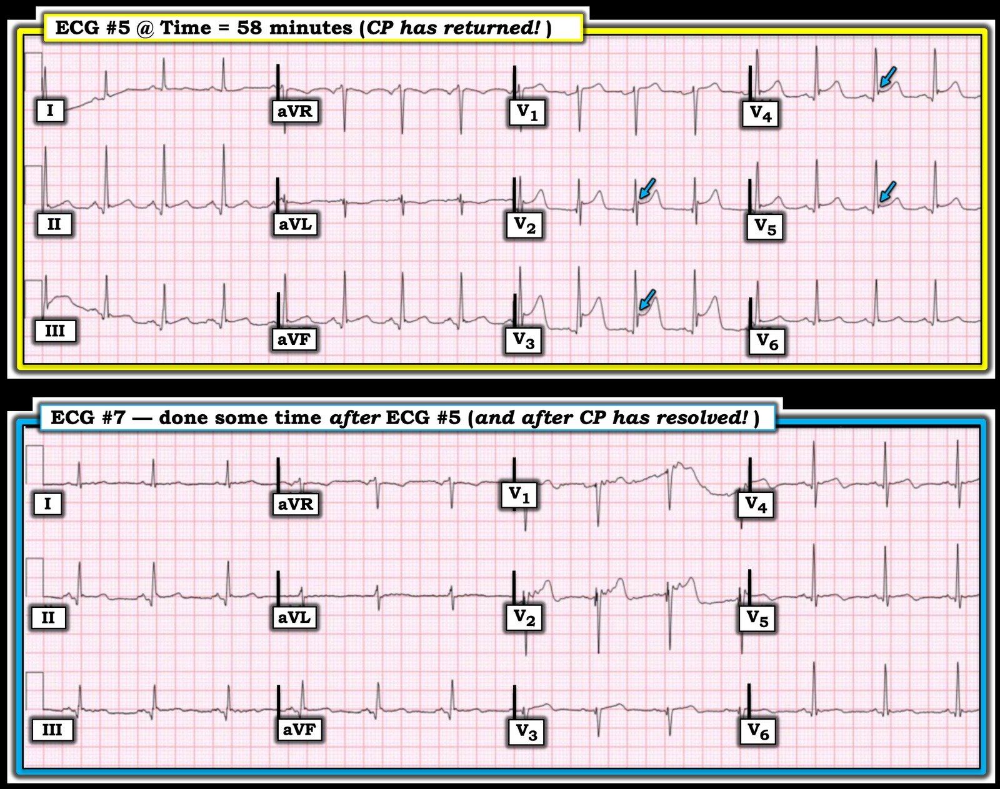
= = =
= = =